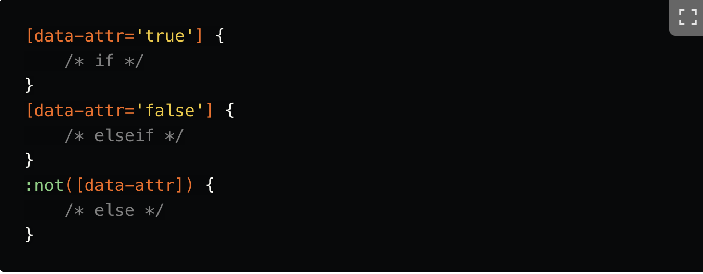

CSS Fun Facts
The CSS specifications are maintained by the World Wide Web Consortium
World Wide Web Consortium
Bootstrap is the most popular CSS framework
Bootstrap
You can write logic in CSS. Does that make it a programming language?
Logic
Bootstrap Logo.
world wide web Consortium icon.

Logic in CSS example.